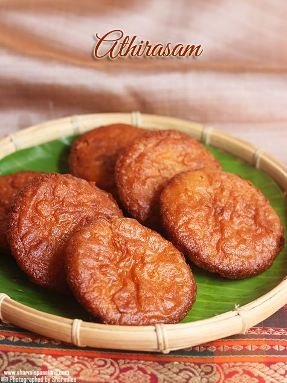
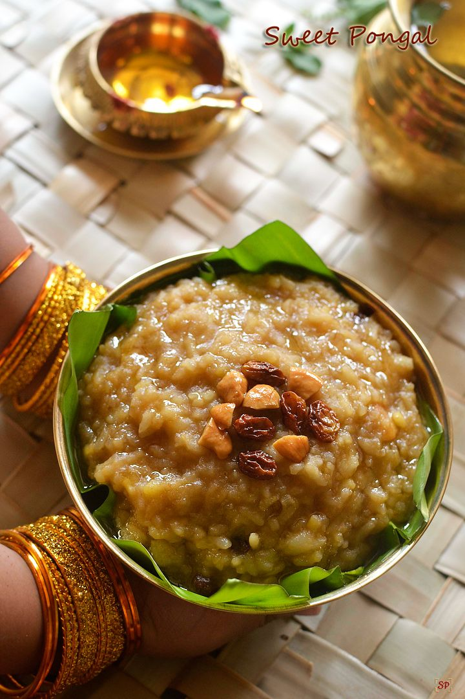
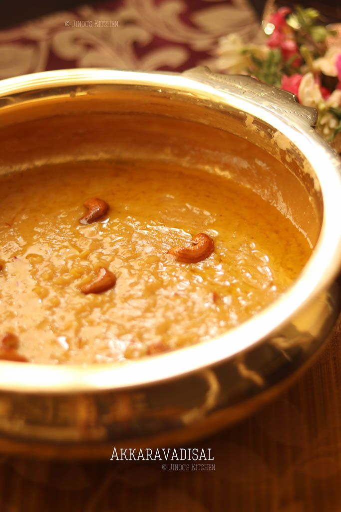

Prepare a smooth batter by mixing rice flour with water. The consistency should be thin, similar to that of dosa batter.
Heat a non-stick pan and spread a thin layer of batter to make rice paper or crepes. Cook until it becomes translucent and remove from the pan.
Repeat the process to make more rice papers.
In another pan, melt ghee and add grated jaggery. Cook until the jaggery melts and forms a syrup consistency.
Now, add cardamom powder to the jaggery syrup and mix well.
Take one rice paper and apply a thin layer of jaggery syrup on it. Fold the sides to form a square or rectangle shape.
Repeat the process with the remaining rice papers.
Allow the Putharekulus to cool down and serve.

Adhirasam
Adhirasam is a traditional South Indian sweet made with rice flour, jaggery, and flavored with cardamom. It's a popular delicacy often prepared during festivals and special occasions.
Wash and soak the raw rice in water for 2 hours. Drain the water and spread the rice on a clean cloth to dry for about 30 minutes.
Grind the dried rice into a fine powder using a mixer or grinder.
In a pan, heat water and add the grated jaggery. Stir until the jaggery melts completely to form a syrup.
Strain the jaggery syrup to remove impurities and return it to the pan. Heat the syrup until it reaches a one-string consistency.
Add cardamom powder to the jaggery syrup and mix well.
In a mixing bowl, combine the rice flour with the jaggery syrup and knead into a smooth dough.
Cover the dough and let it rest for about 6 hours or overnight.
Divide the dough into small lemon-sized balls and flatten them into discs using your palms.
Heat ghee in a deep frying pan and fry the flattened dough discs until they turn golden brown and crisp.
Remove the fried adhirasam from the ghee and drain excess oil using a paper towel.
Allow them to cool before serving.
Thirunelveli Halwa
Thirunelveli Halwa is a famous South Indian sweet delicacy made from wheat, ghee, and sugar. It has a unique texture and rich flavor that makes it irresistible.
Add wheat flour and roast it on low flame until it turns golden brown and aromatic. Keep stirring continuously to avoid burning.
In another pan, boil water and add sugar to it. Stir until the sugar dissolves completely to form a syrup.
Add the sugar syrup to the roasted wheat flour gradually, stirring continuously to avoid lumps.
Cook the mixture on low flame until it thickens and leaves the sides of the pan. Add cardamom powder and saffron strands (if using) and mix well.
Grease a plate with ghee and pour the halwa mixture into it. Flatten it using a spatula.
Allow it to cool for a few minutes, then cut into desired shapes.
Serve the delicious Thirunelveli Halwa and enjoy!
Kozhikode Halwa
Kozhikode Halwa, also known as Calicut Halwa, is a traditional sweet dish from Kerala, India. It is made from wheat, ghee, sugar, and flavored with cardamom and dry fruits.
Add wheat flour and roast it on low flame until it turns golden brown and aromatic. Keep stirring continuously to avoid burning.
In another pan, boil water and add sugar to it. Stir until the sugar dissolves completely to form a syrup.
Add the sugar syrup to the roasted wheat flour gradually, stirring continuously to avoid lumps.
Cook the mixture on low flame until it thickens and leaves the sides of the pan. Add cardamom powder and mix well.
If using, fry cashew nuts and raisins in ghee until golden brown and add them to the halwa mixture.
Grease a plate with ghee and pour the halwa mixture into it. Flatten it using a spatula.
Allow it to cool for a few minutes, then cut into desired shapes.
Serve the delicious Kozhikode Halwa and enjoy!
Rava Ladoo
Rava Ladoo is a popular Indian sweet made from semolina (rava), sugar, ghee, and flavored with cardamom and nuts. It is easy to prepare and delicious to taste.
Pour the milk into a heavy-bottomed pan and bring it to a boil over medium heat.
Reduce the heat to low and simmer the milk, stirring occasionally, until it reduces to half its original quantity.
Add sugar and cardamom powder to the reduced milk and continue to simmer, stirring frequently, until the mixture thickens and attains a creamy consistency.
Once the mixture reaches the desired consistency, add chopped nuts (if using) and mix well.
Turn off the heat and let the Thirattipal cool for a few minutes.
Grease a plate with ghee and pour the Thirattipal mixture onto it, spreading it evenly.
Allow it to cool completely and then cut it into squares or desired shapes.
Serve the delicious Thirattipal as a dessert or snack.

Sakkarai Pongal
Sakkarai Pongal is a traditional South Indian sweet dish made with rice, moong dal, jaggery, and flavored with cardamom and ghee. It is often prepared during festivals and special occasions.
Wash the rice and moong dal together and drain the water.
In a pressure cooker, add the washed rice and moong dal along with 2 cups of water. Pressure cook for 4-5 whistles or until they are well cooked and mushy.
Once the pressure releases naturally, open the cooker and mash the rice-dal mixture slightly. Set aside.
Heat ghee in a pan and fry the cashew nuts and raisins until golden brown. Remove and set aside.
In the same pan, add the grated jaggery along with 1/4 cup of water. Cook over low heat until the jaggery melts completely.
Add the cooked rice-dal mixture to the melted jaggery and mix well. Cook for 5-7 minutes, stirring continuously, until the mixture thickens.
Add cardamom powder and saffron strands (if using) and mix well.
Finally, add the fried cashew nuts and raisins, reserving some for garnishing.
Turn off the heat and transfer the Sakkarai Pongal to a serving dish.
Garnish with the remaining fried cashew nuts and raisins.
Serve hot or warm as a delicious sweet treat!
Elaneer Payasam
Elaneer Payasam, also known as Tender Coconut Kheer, is a delicious South Indian dessert made with tender coconut water, tender coconut flesh, milk, and sugar. It's refreshing and perfect for special occasions.
In a pan, bring the milk to a gentle boil over medium heat.
Add the tender coconut water and tender coconut flesh (malai) to the boiling milk and stir well.
Reduce the heat to low and simmer the mixture for about 10-15 minutes, stirring occasionally, until it thickens slightly.
Add sugar and cardamom powder to the mixture and mix well until the sugar dissolves completely.
If using saffron, soak it in a tablespoon of warm milk for a few minutes, then add it to the payasam mixture.
Remove the payasam from heat and allow it to cool to room temperature.
Meanwhile, heat a small pan and roast the chopped nuts until golden brown. Remove from heat and set aside.
Once the payasam has cooled, transfer it to serving bowls and garnish with the roasted nuts.
Serve chilled or at room temperature. Enjoy the refreshing Elaneer Payasam!

Akkaravadisal
Akkaravadisal is a traditional South Indian sweet dish made with rice, moong dal, jaggery, milk, and ghee. It's a rich and creamy dessert often prepared during festivals and special occasions.